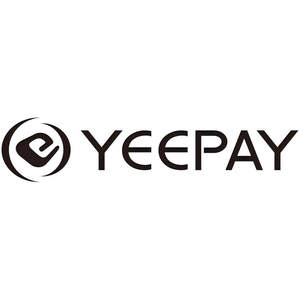

Trade Mark Journal No.2025/011 14 March 2025
UK00004167722 3 March 2025 (9,35,36,42)

- Class 9
- Apparatus for electronic payment processing; Apparatus for processing electronic payments; Computer hardware for facilitating payment transactions by electronic means; Computer software for facilitating payment transactions by electronic means; E-commerce and e-payment software; E-payment software; Electronic and magnetic ID cards for use in connection with payment for services; Electronic payment terminals; Electronic payment terminal; Hardware for processing electronic payments to and from others; Magnetic payment cards; Online payment software; Payment cards being magnetically encoded; Software for processing electronic payments to and from others; Transponders equipped with in-vehicle electronic payment.
- Class 35
- Advertising and advertisement services; Advertising services; Advertising services for the promotion of e-commerce; Advertising services provided over the internet; Advertising services relating to financial investment; Advertising services relating to data bases; Advertising services to create corporate and brand identity; Advertising services to promote public awareness in the field of social welfare; Business advertising services relating to franchising; Digital advertising services; Promotional and advertising services; Providing advertising services; Provision of computerised advertising services.
- Class 36
- Acceptance of bill payments; Bank card, credit card, debit card and electronic payment card services; Banking services provided for paying bills by telephone; Bill payment services; Bill payment services provided through a website; Conducting cashless payment transactions; Contactless payment services; Credit card and payment card services; Credit card payment services; E-wallet payment services; Electronic commerce payment services; Electronic payment services; Electronic wallet services (payment services); Financial consultancy relating to the execution of cashless payment transactions; Financial payment services; On-line bill payment services; Payment card services; Payment services provided via wireless telecommunications apparatus and devices; Processing of electronic payments; Remote payment services.
- Class 42
- Advice and development services relating to computer software; Application service provider (ASP) services, namely, hosting computer software applications of others; Authentication services for computer security; Computer and information technology consultancy services; Computer and software consultancy services; Computer services concerning electronic data storage; Computer services for the analysis of data; Constructing an internet platform for electronic commerce; Creating electronically stored web pages for online services and the internet; Creation of internet web sites; Design of information systems relating to finance; Designing and developing webpages on the internet; Electronic monitoring of personally identifying information to detect identity theft via the internet; Electronic monitoring of credit card activity to detect fraud via the internet; Installation of Internet access software; Internet security consultancy; Programming of software for information platforms on the Internet; Providing artificial intelligence computer programs on data networks; Providing on-line support services for computer program users; Providing software on a global computer network.
Yeepay Co., Ltd.
Representative: SMH BUSINESS CONSULTING LTD